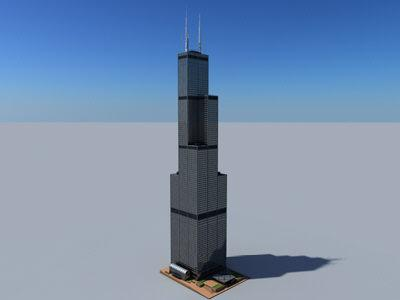
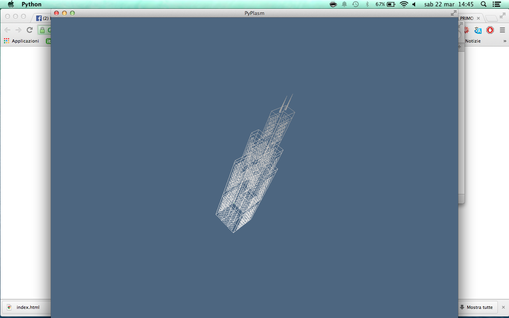

1. Nome dell'edificio: Willis Tower
2. Nome e cognome: Tiziano Sperati
3. Matricola: 417136
Documentazione online:
Documentazione1
Documentazione2
Documentazione3(en)
Descrizione lavoro svolto:
Analisi e progettazione della Willis Tower nota anche come Sears Tower, eseguiti gli esercizi 1,2,3.
Nell'esercizio 3 ho avuto problemi con la traslazione dei piani nella struttura delle pareti.
Immagini:


Collegamenti:
exercise1.py
exercise2.py
exercise3.py